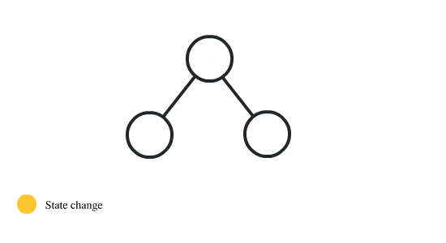
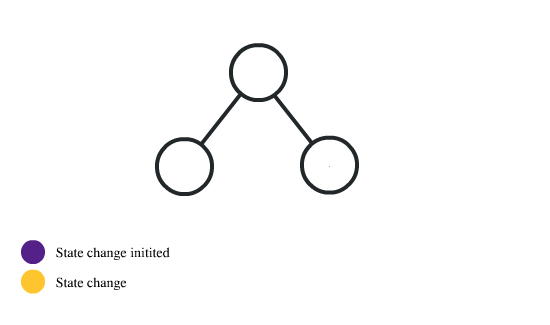
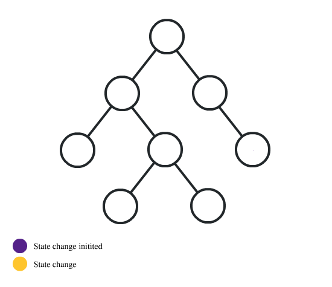
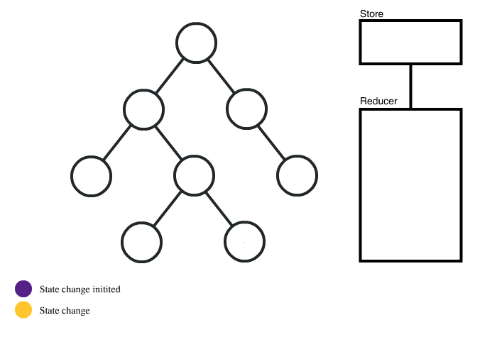

Action creators are functions that return an action object.
// store/Banner/actions.js
import { createAction } from "redux-starter-kit";
import { showBanner } from "store/Banner/actions";
const NAMESPACE = "BANNER";
function actionCreator(name, ns) {
const actionName = !!ns ? `${ns}/${name}` : name;
return createAction(actionName);
}
function createAsyncActions(type) {
return {
done: createAction(`${type}_DONE`),
fail: createAction(`${type}_FAIL`),
start: createAction(`${type}_START`)
};
}
// SYNC
export const setIsVisible = actionCreator("SET_IS_VISIBLE", NAMESPACE); // dispatch(setIsVisible(true)) => { type: "BANNER/SET_IS_VISIBLE" payload: true }
export const setMessage = actionCreator("SET_MESSAGE", NAMESPACE); // dispatch(setMessage("Some message")) => { type: "BANNER/SET_MESSAGE" payload: "Some message" }
// ASYNC
export const fetchDataActions = createAsyncActions(`${NAMESPACE}/FETCH_SIGNUP`);
export const {
done: fetchDataDone,
fail: fetchDataFail,
start: fetchDataStart
} = fetchDataActions;
// Thunk middleware allows us to return a function from an action call,
// allowing us to use `dispatch(fetchData())` in our code and have all status actions fire in turn.
export function fetchData() {
const fetchDataRequest = new RequestBuilder()
.withAuthorization()
.setMethodPost()
.setUrl(Endpoints.myEndpoint())
.build();
// This thunk function has access to `dispatch` and `getState()`.
return (dispatch, getState) => {
const apiClient = new ApiClient.Client();
dispatch(fetchDataStart()); // Dispatch start action
return apiClient.call(
request,
new ApiClient.ResultHandler()
.success((data) => {
dispatch(fetchDataDone(data));
})
.responseContainsErrors((errors) => {
dispatch(fetchDataFail(errors));
dispatch(showBanner(errors));
})
.default(() => {})
);
};
}
Reducers describe how the state will be mutated when a given action `type` is dispatched.
// store/Banner/reducer.js
import { setIsVisible, setMessage } from "./actions";
import { createReducer } from "redux-starter-kit";
const initialState = {
isVisible: false,
message: "Default banner text"
};
export const BannerReducer = createReducer(
initialState,
{
[ setIsVisible ]: (state, { payload: isVisible }) => ({
...state,
isVisible
}),
[ setMessage ]: (state, { payload: message }) => ({
...state,
message
})
}
);
export default BannerReducer;
The root reducer allows you to compose smaller reducer "slices" into a single reducer function that encompasses all possible state mutations in the app.
// store/App/reducer.js
import { combineReducers } from "redux";
import { connectRouter } from "connected-react-router";
export const buildRootReducer = (history) => {
return combineReducers({
banner: BannerReducer,
router: connectRouter(history), // Connects the React-Router to the redux store for nav events
signup: SignupReducer
});
};
// reducer-spec.js
import { reducer } from './reducer';
const state = {
isVisible: false
};
const action = {
type: 'SET_IS_VISIBLE',
payload: true
};
describe( 'Banner reducer', () => {
it( 'should handle the "SET_IS_VISIBLE" action', () => {
const newState = reducer( state, action );
expect( newState.isVisible ).toEqual( action.payload );
})
})
// App.js
import { createBrowserHistory } from "history";
import { Provider } from "react-redux";
import { StoreContext } from "redux-react-hook";
const browserHistory = createBrowserHistory();
const store = configureStore(browserHistory);
export function App() {
return (
<Provider store={store}>
<StoreContext.Provider value={store}>
<ApplicationRouter history={browserHistory} />
<Banner />
</StoreContext.Provider>
</Provider>
);
}
// configureStore.js
export const configureStore = (history) => {
const middlewares = [ loggerMiddleware, thunkMiddleware, routerMiddleware(history) ];
const middlewareEnhancer = applyMiddleware( ...middlewares );
const enhancers = [ middlewareEnhancer ];
const composedEnhancers = composeWithDevTools( ...enhancers );
return createStore( rootReducer, preloadedState, composedEnhancers );
};
// store/App/reducer.js
import { combineReducers } from "redux";
import { connectRouter } from "connected-react-router";
export const buildRootReducer = (history) => {
return combineReducers({
banner: BannerReducer,
router: connectRouter(history), // Connects the React-Router to the redux store for nav events
signup: SignupReducer
});
};
There are 2 ways to connect components and which one is used depends on if you're writing a functional or class-based component
import { isArrayLike } from "../../utils/isArrayLike";
import { isObject } from "../../utils/isObject";
import React from "react";
import { setIsVisible as setIsVisibleAction } from "../../store/Banner/actions";
export class Banner extends React.Component {
renderMessage () {
const { message } = this.props;
if (typeof message === "string") {
return message;
}
if (isArrayLike(message)) {
return message.map((m, index) => ({`${m.code}: ${m.message}`}));
}
if (isObject(message)) {
return !!message.message ? message.message : JSON.stringify(message);
}
return message;
}
showBanner () {
this.props.setIsVisible( true );
}
hideBanner () {
this.props.setIsVisible( false );
}
render () {
const { isVisible, message } = this.props;
return isVisible && (
{renderMessage()}
);
}
}
// Maps the app state to the props of this "connected" component
const mapStateToProps = ( state ) => ({
isVisible: state.banner.isVisible, // -> props.isVisible
message: state.banner.message // -> props.message
});
// Map the "dispatching" methods to props
const mapDispatchToProps = (dispatch) => ({
setIsVisible: ( visible ) => dispatch( setIsVisibleAction( visible ) ) // -> props.setIsVisible(true|false)
});
// Connect to the store via Higher Order Component (HOC)
export default connect(mapStateToProps, mapDispatchToProps)(Banner);
import React, { useCallback, useEffect, useState } from "react";
import { useDispatch, useMappedState } from "redux-react-hook";
import { isArrayLike } from "../../utils/isArrayLike";
import { isObject } from "../../utils/isObject";
import { selectSlice } from "./../../store/selectors";
import { setIsVisible } from "../../store/Banner/actions";
import { usePrevious } from "../../hooks/usePrevious";
// In a functional component, the function _is_ the render function
export function Banner() {
// This hook provides dispatch() to the component
const dispatch = useDispatch();
// Select our state "slice". In this case, "banner".
// This correlates to the entries in `buildRootReducer`
const mapState = useCallback((state) => state.banner, []); // This is memoized
const { isVisible, message } = useMappedState(mapState); // Get our state variables via this hook
// Show the banner (example)
function showBanner () {
dispatch(setIsVisible(true));
}
// Hide the banner (example)
function hideBanner () {
dispatch(setIsVisible(false));
}
// Allow our message to be a string, array, or object
function renderMessage() {
if (typeof message === "string") {
return message;
}
if (isArrayLike(message)) {
return message.map((m, index) => ({`${m.code}: ${m.message}`}));
}
if (isObject(message)) {
return !!message.message ? message.message : JSON.stringify(message);
}
return message;
}
return isVisible && (
{renderMessage()}
);
}
export default Banner;
Nope. Not everyone needs this much state management or scalability.
Prop drilling is passing props down through components that don't need to reference them just so a child component can access it.
It starts like this:
State is contained in the top-level component and passed to children. Not so bad...

The app has grown and you now need to trigger updates across components. Luckily, "lifting up state" is still easy at this point.

The app has grown and it's getting harder to see where updates originate or how they affect the app. Things are now getting out of hand...

Redux --->
Redux makes it easy to dispatch the action you need from where you need it, as well as track it through the application.

store.actions === myExpectedActionsArray